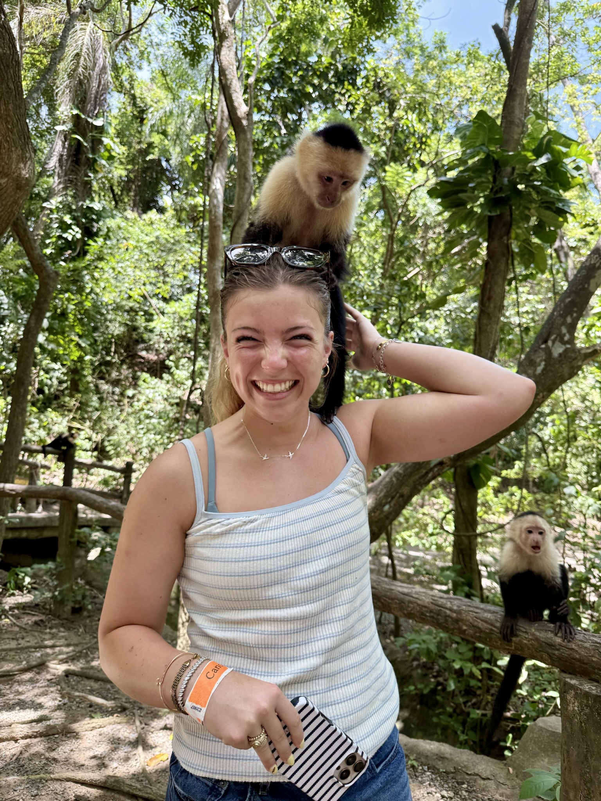

Smart Systems, Smart ChoicesTechnology, Ethics, and SecuritySadie BawduniakOctober 24, 2026Sadie BawduniakIn doing this assignment, I learned how MIS integrates people, technology, and business processes to support decision-making. I learned about database management and data analytics as well. I learned that there are boundaries that are critical in using AI in the workplace and in school. AI is a great productivity tool, but should not run your life. I studied the Stuxnet attack and learned how important cybersecurity is, as well as the amount of damage that can be done without hurting one person. Mostly, I learned how VS Code and html work and how to apply those skills. I have also learned that coding is not nearly as scary as I had previously thought!  |